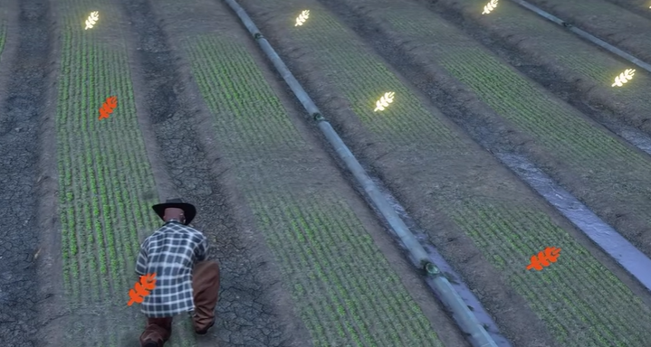

Reserved Field indicator comparison
Reference behavior versus the optimized Phosphor Grains runtime sprite.
FINAL RESULT · PASSED
Source reference
720 × 360

Implementation asset & semantic states
One 2.3 KB texture
Empty
Stable
Care / priority
Urgent